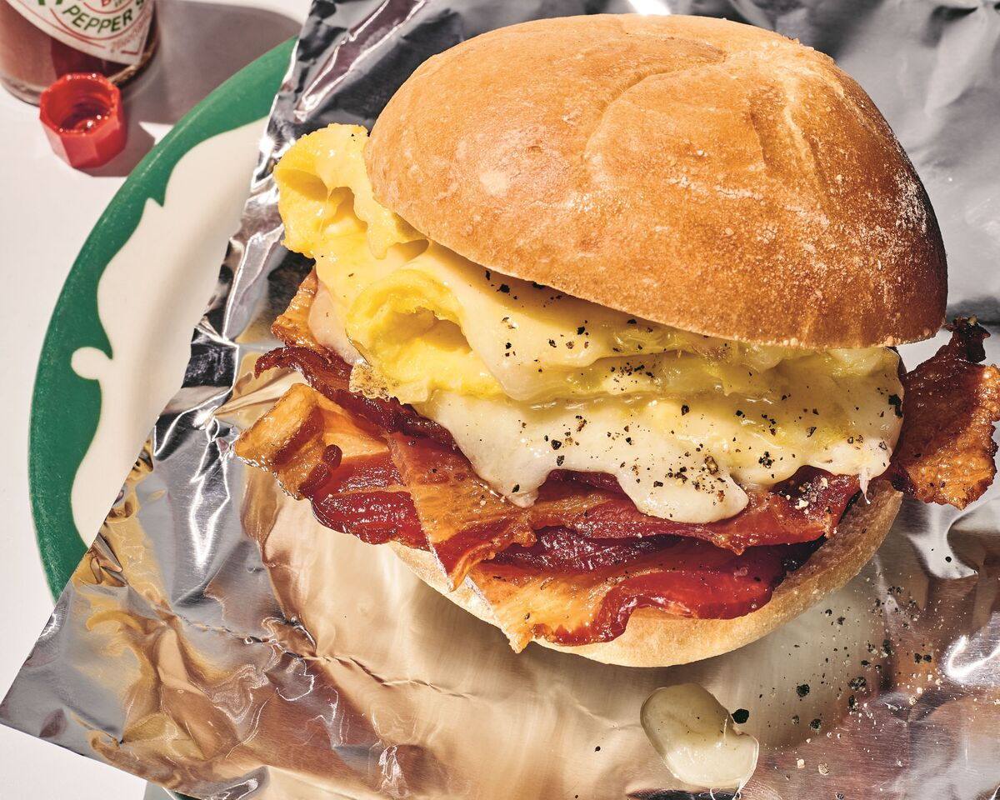

Bacon, Egg, and Cheese Sandwich

Description
Say hello to the ultimate breakfast delight – the "Bacon, Egg, and Cheese
Sandwich"! This scrumptious creation features crispy, savory bacon strips
that add a perfect crunch to every bite. Nestled between these
mouthwatering bacon layers are fluffy scrambled eggs cooked to perfection,
creating a creamy and comforting texture.
To take the taste to the next level, melted gooey cheese oozes over the
eggs and bacon, infusing the sandwich with a delightful richness. Whether
you prefer cheddar, American, or Swiss cheese, it's guaranteed to make
each bite a cheesy delight.
All of this goodness is lovingly encased between two slices of lightly
toasted bread or a soft, buttery English muffin, adding just the right
amount of warmth and comfort to this breakfast masterpiece. The
combination of flavors is a symphony for your taste buds – a harmony of
smoky, savory, and cheesy goodness.
Quick to prepare and impossible to resist, the "Bacon, Egg, and Cheese
Sandwich" is the perfect way to start your day on a delicious note,
leaving you fueled and ready to take on whatever comes your way. Enjoy
this classic breakfast delight and treat yourself to a morning filled with
pure satisfaction!
Ingredients
- 2 slices bacon
- 4 teaspoons butter, divided
- 3 large eggs
- 1 pinch freshly ground black pepper
- 1 pinch salt
- 1/4 cup shredded Cheddar cheese
- 4 slices bread
Steps
-
Place bacon in a nonstick skillet and cook over medium-high heat,
turning occasionally, until evenly browned, about 7 minutes. Drain bacon
slices on paper towels. Remove bacon to a drip line tray. Drain off
bacon grease for another use. Wash out the skillet.
- Whisk eggs with salt and pepper in a small bowl until frothy.
-
Melt 2 teaspoons butter in the nonstick skillet over medium heat. Pour
in beaten eggs; let cook for 30 seconds. Lift the edges of the omelet so
that the uncooked egg runs under the cooked edges and comes into contact
with the hot skillet. Shake and tilt the skillet to move the uncooked
egg. Repeat until the top is set, about 3 minutes; reduce heat to low.
-
Meanwhile, chop bacon roughly; sprinkle over omelet. Sprinkle with
cheese; allow cheese to melt, 1 to 2 minutes.
-
Meanwhile, butter 2 slices of bread with 1/2 teaspoon butter each. Lay
bread, buttered side up, side-by-side over omelet, leaving about 1 inch
between slices. The melted cheese will help the bread adhere.
-
Run a spatula around the entire omelet to loosen from the skillet.
Carefully turn the omelet over so buttered side of bread is in contact
with the skillet. Cook until bread is toasted and golden, about 2
minutes.
-
Using the spatula, fold in edges of omelet to align with sides of the
bread. Cut omelet along center with the spatula to form 2 sandwiches.
Butter 2 remaining bread slices with remaining butter; place butter side
up on each sandwich. Turn sandwiches; cook until golden, about 2 minutes
more. Serve and enjoy immediately!
Back to Main Page